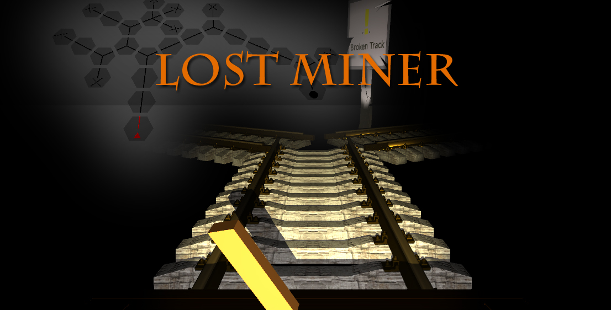

Player 1 steers a cart through a very dark mine. They can describe their situation to Player 2 who can see the map in his control room. He has control over barriers and his objective is to get Player 1 out safe. The control room player can press '1' to open all gates for 4 seconds, and has to tell Player 1 where to go. Player 1 can select a direction and use the breaks. Pieces of the track have signs that tell the player to either break ("Caution") with Spacebar or to go fast "Broken Track".
Team
Jeffrey Bissel
Hab ich irgentwas gecodet was dumm war?
JaAa - Luca
Control Room Design, Control Room Actions, Website
Johannes Ganser
Hätten wir Haskell benutzt, wäre das alles viel besser.
Nein - Alle
Hindernisse, Level Design
Fenja Kollasch
9 von 10 Software-Engineers haben sich gerade übergeben.
Messenger, 3D Anpassung, GUI, Plakat
Luca Nixdorf
Halb gecrashed is' Schlaganfall.
Network Connection, Map Generation, Cart Player Handling
Special Guest: Alica Henze
Gebt mir den Glitzerkleber und ich regel das.
Sponsored by
Special thanks to MakerBot
for Crossing Guard Model
Published on June 14, 2016
www.thingiverse.com/thing:220617